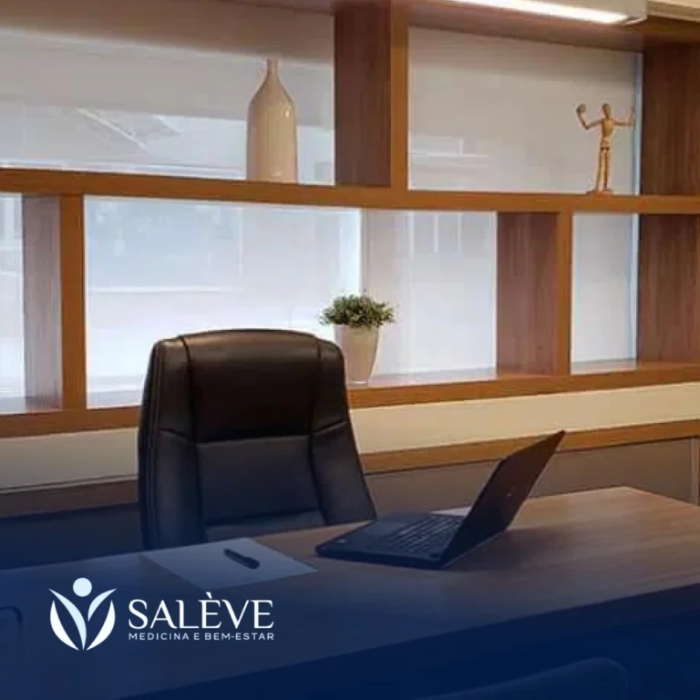
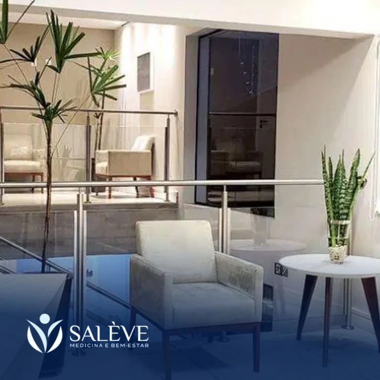
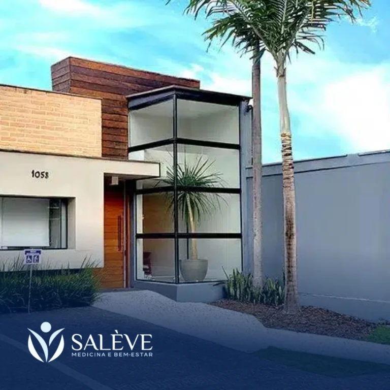
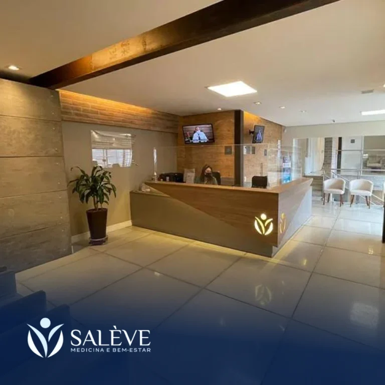

Paleta de cores
Medida no navegador: fundos ponderados pela área ocupada, textos pela quantidade de caracteres. Destaques reúnem cores saturadas e fundos de botão.
Fundos
#FBFBFB
Fundo · 71.2%
rgb(251, 251, 251)
rgb(251, 251, 251)
#001D4C
Fundo · 26.1%
rgb(0, 29, 76)
rgb(0, 29, 76)
#F1F1F1
Fundo · 2.4%
rgb(241, 241, 241)
rgb(241, 241, 241)
#002B72
Fundo · 0.2%
rgb(0, 43, 114)
rgb(0, 43, 114)
Textos
#FFFFFF
Texto · 48.1%
rgb(255, 255, 255)
rgb(255, 255, 255)
#00112C
Texto · 36.5%
rgb(0, 17, 44)
rgb(0, 17, 44)
#001D4C
Texto · 10.8%
rgb(0, 29, 76)
rgb(0, 29, 76)
#131D33
Texto · 4.6%
rgb(19, 29, 51)
rgb(19, 29, 51)
Destaques
#001D4C
Destaque
rgb(0, 29, 76)
rgb(0, 29, 76)
#002B72
Destaque
rgb(0, 43, 114)
rgb(0, 43, 114)
#131D33
Destaque
rgb(19, 29, 51)
rgb(19, 29, 51)
Tipografia
Inter · Aa Bb Cc 0123
82% do texto · Se a sua cabeça não desliga, esta página é para você.Georgia · Aa Bb Cc 0123
16% do texto · Se a sua cabeça não desliga, esta página é para você.Sora · Aa Bb Cc 0123
3% do texto · Se a sua cabeça não desliga, esta página é para você.Escala usada (desktop 1440px)
| Tamanho | Peso | Família | Amostra |
|---|---|---|---|
| 42px | 500 | Georgia | Texto de exemplo |
| 38px | 500 | Georgia | Texto de exemplo |
| 37px | 500 | Georgia | Texto de exemplo |
| 35px | 500 | Georgia | Texto de exemplo |
| 32px | 500 | Georgia | Texto de exemplo |
| 24px | 400 | Inter | Texto de exemplo |
| 22px | 500 | Georgia | Texto de exemplo |
| 20px | 300 | Inter | Texto de exemplo |
| 18px | 400 | Inter | Texto de exemplo |
| 18px | 500 | Inter | Texto de exemplo |
Mobile (390px): 35px/500, 31px/500, 30px/500, 23px/500, 22px/500, 19px/400, 19px/300, 19px/500 · H1 no mobile: sem h1 semântico
Tags
| Tag | Família | Tamanho | Peso | Altura de linha | Espaçamento | Caixa | Cor |
|---|---|---|---|---|---|---|---|
| <h2> | Inter | 16px | 200 | 22.4px | normal | none | #FFFFFF |
| <h3> | Georgia | 22px | 500 | 26.4px | normal | none | #001D4C |
| <p> | Sora | 13px | 200 | 16.9px | normal | none | #FFFFFF |
Botões
Recriados com os estilos computados reais. Efeitos de hover e animação não aparecem aqui; veja a seção de animações.
Agende sua consulta agora
fundo #001D4C · texto #FFFFFF · raio 12px · padding 24px 24px · 18px/500 none · 4x na páginaEntrar em contato
fundo #001D4C · texto #FFFFFF · raio 12px · padding 18px 18px · 16px/400 none · 1x na páginaACESSAR NO MAPAS
fundo #001D4C00 · texto #001D4C · raio 12px · padding 18px 24px · 16px/500 uppercase · 1x na páginaAgende sua consulta presencial
fundo #002B72 · texto #FFFFFF · raio 12px · padding 24px 24px · 18px/500 none · 1x na páginaCards e containers
Card (4x)
Primeiro contato Após o agendamento, você receberá todas as orientações para a consulta, s
raio 12px · sombra none · borda 0px none rgb(51, 51, 51) · 673x153pxBordas, raios e sombras
12px
15px
Sombras
rgba(0, 0, 0, 0.5) 0px 0px 5px 0pxrgba(0, 0, 0, 0.16) 5px 5px 32px 0pxEspaçamentos
- Largura do conteúdo mais comum: 1140px
- Padding vertical das seções (topo/base): 0px/0px (8x)
- Gaps mais usados (flex/grid): 20px, 14px, 5px, 15px, 10px, 17px
- Altura total da página: 5195px em 8 seções
Estrutura e ritmo de cores das seções
Cada faixa é uma seção de topo, com altura proporcional e a cor ou imagem de fundo real.
1. menu Dr Pedro Camargo | Psiquiatra 750px · padding 0px/0px
2. hero Sobre mim 600px · padding 0px/0px
3. sobre Para quem é o atendimento? 750px · padding 0px/0px
4. para-quem-e Depoimentos 620px · padding 0px/0px
5. prova-social Como funciona o atendimento? 1025px · padding 0px/0px
6. como-funciona Agende sua consulta 802px · padding 0px/0px
7. localizacao FAQ 588px · padding 0px/0px
8. faq Todos os direitos reservados © 2025 60px · padding 0px/0px
Animações, ícones e bibliotecas
- Keyframes próprios: hide-scroll
- Animações de entrada do Elementor: nenhuma
- Classes de scroll reveal da casa: scroll-bottom, scroll-left, scroll-right, scroll-top
- Ícones: 21 SVG, 0 ícones de fonte
- Bibliotecas e tags detectadas: ga4, google-ads, jquery, lottie, swiper
Snippets da biblioteca presentes nesta página
Imagens do site



